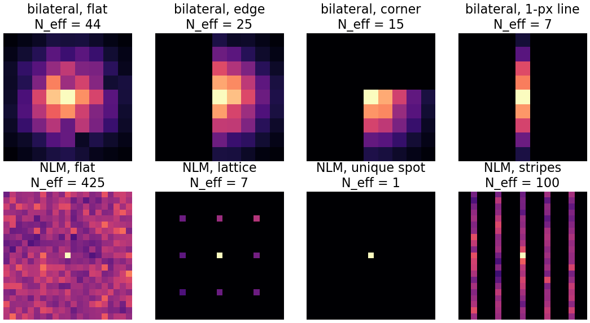
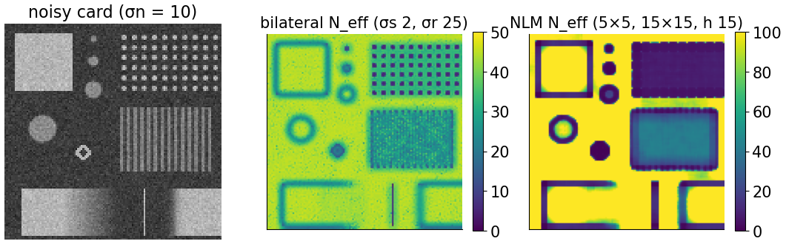
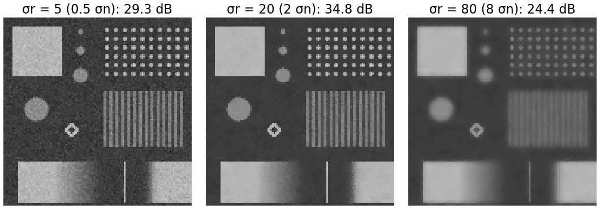
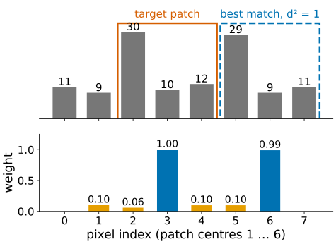
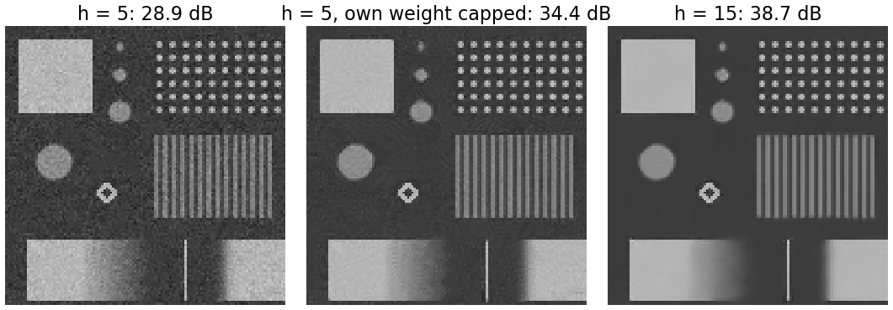
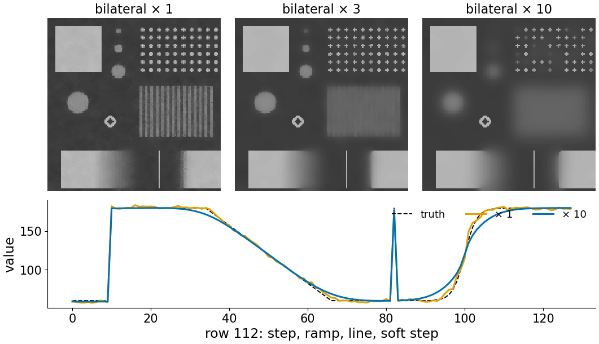
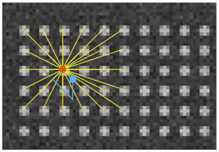
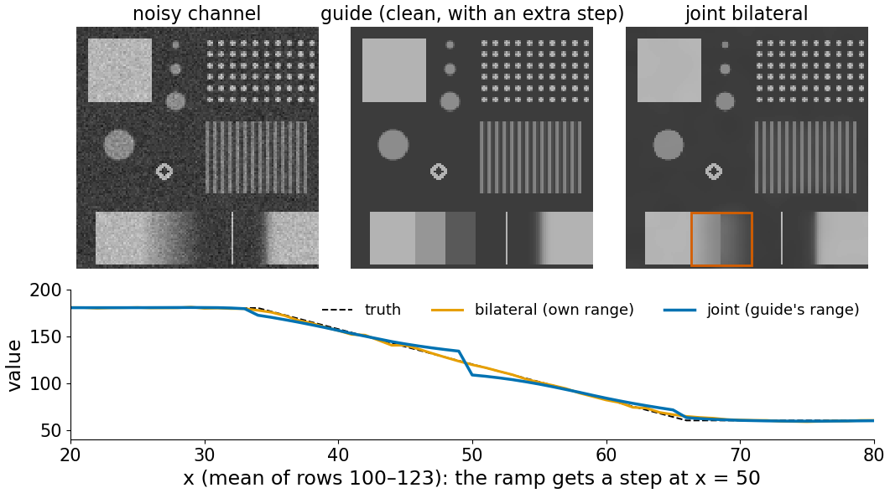

The deconvolution day (denoise) introduced the bilateral filter and non-local means in one slide each. Both are weighted means: each output pixel is an average of other pixels, with weights that depend on the image. This unit opens the box.
Slides titled The math give the formulas and proofs; the ideas are complete without them.
From denoising and what you may measure:
Same structure as a Gaussian blur, except that the weights now depend on the image.
Pick one pixel and paint the weight of every other pixel:

A weighted mean of N equal weights reduces independent noise by \sqrt N. For unequal weights the same holds with the effective number
N_{\text{eff}} = \frac{(\sum w)^2}{\sum w^2}.
The maps: the bilateral filter averages about 44 pixels in flat regions but only 5–25 along edges, so a noisy rim stays at every edge. NLM averages hundreds in flat regions, 7 on the lattice, 1 on the unique spot.

Bilateral, noise \sigma_n = 10, edges of height 120:
The rule of thumb σr ≈ 2σn works when the edges are much higher than the noise. When an edge is about as high as the noise, no σr separates them.

x = (11, 9, 30, 10, 12, 29, 9, 11), patches of 3, target pixel 3 (value 10, patch (30, 10, 12)), h = 10:
| centre | 1 | 2 | 3 | 4 | 5 | 6 |
|---|---|---|---|---|---|---|
| d^2 | 228.7 | 281.7 | 0 | 231 | 231.3 | 1 |
| weight | 0.10 | 0.06 | 1 | 0.10 | 0.10 | 0.99 |
Estimate: \sum w x/\sum w = 10.93. The pixel 6 patch (29, 9, 11) is a copy of the target’s; a plain 3-pixel mean would give (30 + 10 + 12)/3 = 17.3.

The pixel’s own patch always matches itself perfectly (d = 0, weight 1). When good matches are rare (small h, a unique detail), the own weight dominates and the pixel is hardly changed: the noise stays.
Fix: give the own pixel the weight of its best other match instead of 1.
The fix also exposes the risk: on a unique spot, the “best other match” is a poor one, and the estimate borrows from patches that are not copies.

The range weight e^{-d^2/2\sigma_r^2} is an edge-stopping function of the difference d, exactly like g_1 in Perona–Malik (with σr in the role of K). One bilateral pass is like one big Perona–Malik step over a whole window.
Iterate it and you get what Perona–Malik gives when run long:

Build a graph: every pixel is a node; the NLM weight w_{pq} is an edge between p and q. “Non-local” means: the graph connects pixels that look alike, not pixels that are close.
One NLM pass replaces every pixel by the weighted mean of its graph neighbours: one step of heat flow on this graph (the heat step of the first unit, on a different grid).

Red: a dot centre, linked to its look-alikes. Cyan: a pixel between dots, linked to its own kind.
Take the range weights from a different, cleaner image, the guide, and the values from the noisy one:
w_{pq} = e^{-|p-q|^2/2\sigma_s^2}\,e^{-(G_p - G_q)^2/2\sigma_r^2}.
